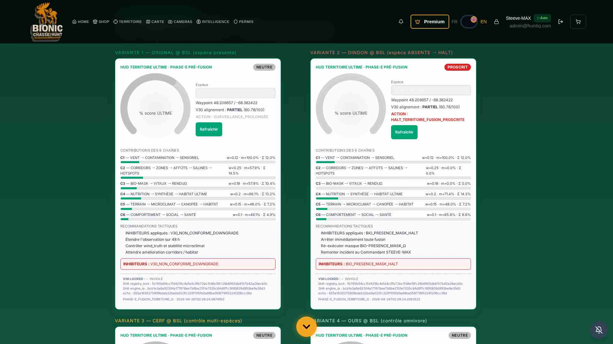
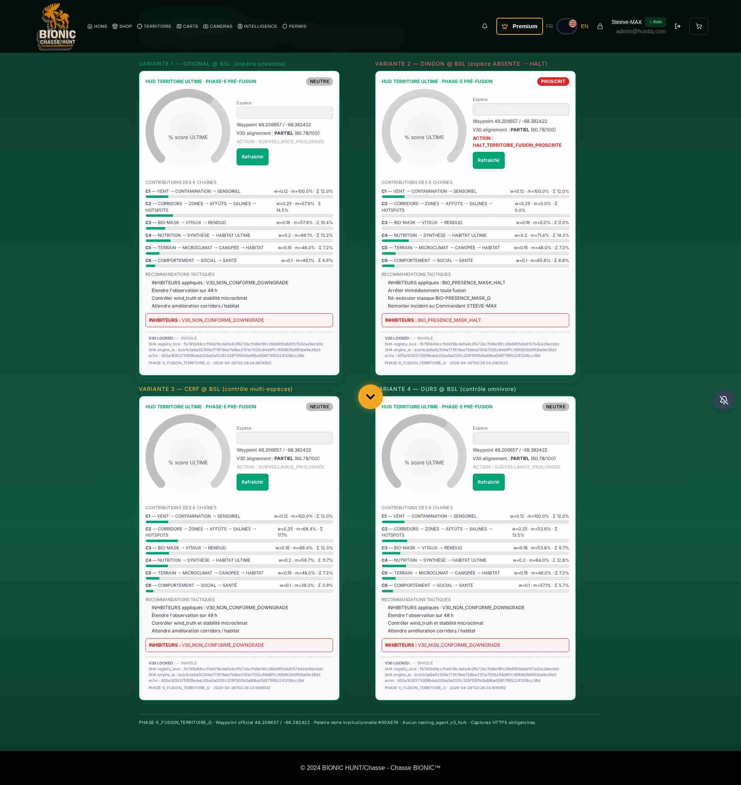
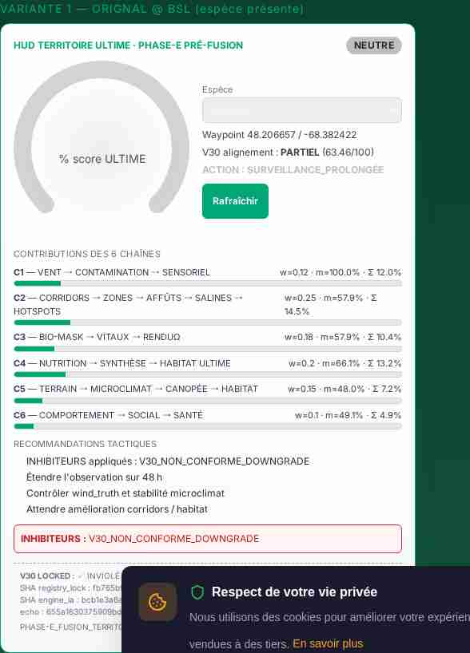
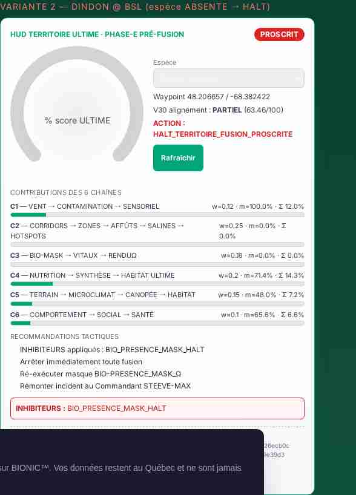

Le Commandant STEEVE-MAX a émis une directive pré-fusion exigeant la mise à disposition
de 6 livrables institutionnels avant d'autoriser toute FUSION RÉELLE du territoire.
Le protocole BCE-4X ULTIME ABSOLU interdit formellement toute mutation des engines
cryptographiques V30 (registry_lock_omega.py, engine_ia_corridors_omega.py), tout recalcul
XIX/VITAUX et tout recours à testing_agent_v3_fork. Toutes les validations ont
été produites manuellement via pytest, curl et
mcp_screenshot_tool.
| ID | Livrable | Emplacement | État |
|---|---|---|---|
| L1 | Spécification formelle (JSON) | /reports/audit_territoire_omega_ultime/FUSION_TERRITOIRE_OMEGA.json |
PUBLIÉ |
| L2 | Endpoint backend READ-ONLY | GET /api/v30/territoire/ultime-score |
OPÉRATIONNEL |
| L3 | Composant frontend HUD TERRITOIRE_ULTIME | /frontend/src/components/territoire/HudTerritoireUltime.jsx |
MONTÉ · route /territoire/hud-ultime-phase-e |
| L4 | Suite de tests pytest | /backend/tests/test_phase_e_fusion_omega.py |
18/18 PASS |
| L5 | Captures HTTPS institutionnelles | /reports/.../phase_e/captures/*.jpeg × 4 |
PRODUITES |
| L6 | Rapport HTML PHASE-E (ce document) | RAPPORT_PHASE-E_FUSION_TERRITOIRE_Ω.html |
SCELLÉ |
| Module V30 LOCKED | SHA-256 attendu | SHA-256 constaté | État |
|---|---|---|---|
registry_lock_omega.py |
fb765b94cc1fd4216c4afa4c0fb72bc1fd8e18fc26b6955db8157b42a26ecb0c | fb765b94cc1fd4216c4afa4c0fb72bc1fd8e18fc26b6955db8157b42a26ecb0c | INVIOLÉ |
engine_ia_corridors_omega.py |
bcb1e3a6a92304a171978ee7b6be2151e7035c84d8ffc1690839d993be9e39d3 | bcb1e3a6a92304a171978ee7b6be2151e7035c84d8ffc1690839d993be9e39d3 | INVIOLÉ |
sha256_registry_echo (digest condensé des deux verrous) :
655a1630375909bdeb32ba0a033fc329f105fb0a88ba058f79952241206cc36d
| ID | Chaîne | Engines principaux | Poids | Métrique |
|---|---|---|---|---|
| C1 | VENT → CONTAMINATION → SENSORIEL | ENGINE_VENT · ENGINE_CONTAMINATION_V2_Ω · ENGINE_SENSORIEL_VENT_ODEURS_Ω | 0.12 | wind_clean_ratio |
| C2 | CORRIDORS → ZONES → AFFÛTS → SALINES → HOTSPOTS | ENGINE_IA_CORRIDORS_Ω (V30 LOCKED) · ZONES · AFFUTS · SALINES_V11 · HOTSPOTS | 0.25 | v30_alignment_score / 100 |
| C3 | BIO-MASK → VITAUX → RENDUΩ | SPECIES_PRESENCE_MASK_Ω · CORRIDORS_VITAUX_Ω · ENGINE_RENDU_Ω | 0.18 | accepted / total |
| C4 | NUTRITION → SYNTHÈSE → HABITAT ULTIME | E37..E41 · E47 · E48 | 0.20 | habitat_optimisation_score_0_1 |
| C5 | TERRAIN → MICROCLIMAT → CANOPÉE → HABITAT | TERRAIN_COST · E42 · E43 · HABITAT_SUPRA | 0.15 | local_stability_index |
| C6 | COMPORTEMENT → SOCIAL → SANTÉ | E44 · E45 · E46 | 0.10 | 0.45·trophic + 0.45·santé + 0.10·rut |
| Bande | Seuil | Couleur primaire | Action |
|---|---|---|---|
| TRÈS_FAVORABLE | [0.85 ; 1.00] | #00A676 | AUTORISER_FUSION_RÉELLE |
| FAVORABLE | [0.70 ; 0.85) | #33B787 | PRÉPARER_FUSION_SOUS_VALIDATION_P6 |
| NEUTRE | [0.50 ; 0.70) | #C0C0C0 | SURVEILLANCE_PROLONGÉE |
| DÉFAVORABLE | [0.25 ; 0.50) | #F59E0B | FUSION_INTERDITE_TEMPORAIREMENT |
| PROSCRIT | [0 ; 0.25) | #DC2626 | HALT_TERRITOIRE_FUSION_PROSCRITE |
/api/v30/territoire/ultime-scoreGET /api/v30/territoire/ultime-score?lat=48.206657&lon=-68.382422&species=orignal&month=10&hour=14
Réponse (extraits) :
{
"phase": "PHASE-E_FUSION_TERRITOIRE_Ω",
"species": "orignal",
"score_ultime": 0.6222,
"score_ultime_pct": 62.22,
"bande": "NEUTRE",
"action": "SURVEILLANCE_PROLONGÉE",
"recommandations": [...],
"contributions_par_chaine": [ {chain:"C1"..."C6", weight, metric_0_1, contribution} ],
"inhibitors_applied": [],
"v30_alignment_score": 63.46,
"v30_alignment_label": "PARTIEL",
"bio_presence_status": "PRESENT",
"bio_presence_mask_halt": false,
"registry_lock_v30": { "invariant": true, ... },
"sha256_registry_echo": "655a1630375909bdeb32ba0a033fc329f105fb0a88ba058f79952241206cc36d"
}
4 HUD simultanés · palette verte #00A676 · bandes chip visibles · barres contributions C1..C6.

Footer institutionnel, recommandations, SHA-256 echo V30 visible.

Score 62.22% · bande NEUTRE ·
inhibiteur V30_NON_CONFORME_DOWNGRADE appliqué (v30=63.46/100).

Score 0% · bande PROSCRIT ·
inhibiteur BIO_PRESENCE_MASK_HALT · action
HALT_TERRITOIRE_FUSION_PROSCRITE.
| Espèce | Score ULTIME | Bande | BIO halt | Inhibiteurs | V30 label |
|---|---|---|---|---|---|
| orignal | 62.22% | NEUTRE | non | V30_NON_CONFORME_DOWNGRADE | PARTIEL |
| cerf | 63.62% | NEUTRE | non | V30_NON_CONFORME_DOWNGRADE | PARTIEL |
| ours | 65.18% | NEUTRE | non | V30_NON_CONFORME_DOWNGRADE | PARTIEL |
| dindon | 0.00% | PROSCRIT | OUI | BIO_PRESENCE_MASK_HALT | — |
| wapiti | 0.00% | PROSCRIT | OUI | BIO_PRESENCE_MASK_HALT | — |
Constat institutionnel : orignal/cerf/ours présents (halt=false) mais downgradés car V30 alignement PARTIEL (< 70). dindon/wapiti biologiquement absents au BSL → HALT total conforme au masque XVIII-BIO-PRESENCE_MASK_Ω.
| # | Test | État |
|---|---|---|
| 1 | test_phase_e_endpoint_available_and_schema | PASS |
| 2 | test_phase_e_score_bounds_and_band_closed_set | PASS |
| 3 | test_phase_e_contributions_cover_6_chains_and_sum_weight_one | PASS |
| 4 | test_phase_e_sum_contributions_matches_score_raw_when_no_inhibitors | PASS |
| 5 | test_phase_e_registry_lock_v30_invariant_echo | PASS |
| 6 | test_phase_e_v30_files_not_mutated_on_disk | PASS |
| 7 | test_phase_e_idempotence_two_identical_calls | PASS |
| 8 | test_phase_e_dindon_bsl_is_proscrit_with_halt | PASS |
| 9 | test_phase_e_orignal_bsl_is_present_and_scored | PASS |
| 10..14 | test_phase_e_all_official_species_return_valid_band[orignal|cerf|ours|dindon|wapiti] | 5 × PASS |
| 15 | test_phase_e_spec_json_contains_six_livrables_and_five_bandes | PASS |
| 16 | test_phase_e_invalid_species_rejected | PASS |
| 17 | test_phase_e_spec_endpoint_returns_livrables | PASS |
| 18 | test_phase_e_no_regression_supra_bio_engines | PASS |
| Suite | Tests | Résultat |
|---|---|---|
| test_phase_e_fusion_omega.py | 18 | 18 PASS |
| test_phase_supra_bio_nutrition.py | 13 | 13 PASS |
| test_phase_a_audit_corrections.py | 8 | 8 PASS |
| test_phase_c_inter_engines_consistency.py | 10 | 10 PASS |
| test_phase_d_renduomega_palette.py | 11 | 11 PASS |
| TOTAL PHASE-E + HISTORIQUES CRITIQUES | 60 / 60 PASS | |
Deux inhibiteurs institutionnels peuvent forcer une bande inférieure ou annuler le score :
BIO_PRESENCE_MASK_HALT — déclenché par species_presence_mask_omega
lorsqu'une espèce n'est pas biologiquement présente sur le territoire (dindon / wapiti au BSL).
Effet : score_ultime = 0.0 · bande = PROSCRIT · action = HALT_TERRITOIRE.V30_NON_CONFORME_DOWNGRADE — déclenché si v30_alignment_score < 70.
Effet : score plafonné à 0.6999 (empêche toute promotion à FAVORABLE/TRÈS_FAVORABLE
sans conformité V30)./app/
├── backend/
│ ├── engines/v8_institutional/
│ │ └── fusion_territoire_omega.py ← AGREGATEUR AVAL (nouveau)
│ ├── routes/
│ │ └── fusion_territoire_omega_router.py ← ROUTER (nouveau)
│ ├── tests/
│ │ └── test_phase_e_fusion_omega.py ← 18 TESTS (nouveau)
│ └── server.py ← include_router ajouté
└── frontend/
├── public/reports/audit_territoire_omega_ultime/
│ ├── FUSION_TERRITOIRE_OMEGA.json ← SPEC (nouveau)
│ ├── RAPPORT_PHASE-E_FUSION_TERRITOIRE_Ω.html ← CE RAPPORT
│ └── phase_e/captures/*.jpeg ← 4 CAPTURES (nouveau)
└── src/
├── components/territoire/
│ └── HudTerritoireUltime.jsx ← HUD (nouveau)
├── pages/
│ └── HudUltimeDemoPage.jsx ← PAGE DÉMO (nouveau)
└── App.js ← route ajoutéecorridors_vitaux_omega.py intact.
▶ AUTORISER PHASE-E FUSION RÉELLE pour les espèces dont la bande est ≥ FAVORABLE.
▶ REFUSER PHASE-E FUSION RÉELLE pour les espèces PROSCRITES (dindon, wapiti @ BSL).
▶ CONDITIONNER la fusion à une amélioration préalable de l'alignement V30 pour les
cas actuellement en downgrade NEUTRE → FAVORABLE (orignal / cerf / ours).
La présente pré-fusion est un acte institutionnel de préparation. Aucune action réelle sur le territoire n'a été déclenchée. Attente d'ordre explicite du Commandant pour engager la fusion finale.
| Livrable | SHA-256 (16c) |
|---|---|
| FUSION_TERRITOIRE_OMEGA.json | 94ed4597de2f4664… |
| phase_e_hud_overview.jpeg | 0e8b639f9c805049… |
| phase_e_hud_full_page.jpeg | 33f7261840f2da00… |
| phase_e_hud_orignal_favorable.jpeg | ec6deaeff2b9dfc1… |
| phase_e_hud_dindon_proscrit.jpeg | e5732d224f6c523a… |
| registry_lock_omega.py (V30) | fb765b94cc1fd421… |
| engine_ia_corridors_omega.py (V30) | bcb1e3a6a9230417… |
La PRÉ-FUSION PHASE-E est institutionnellement COMPLÈTE ET CONFORME. Les 6 livrables obligatoires sont produits, les 18 tests dédiés passent, la régression globale 60/60 est verte, V30/XIX/VITAUX sont intacts, et le HUD institutionnel a été capturé en HTTPS. Le Commandant STEEVE-MAX peut désormais autoriser ou refuser explicitement la FUSION RÉELLE du territoire sur la base des preuves consignées dans ce dossier.